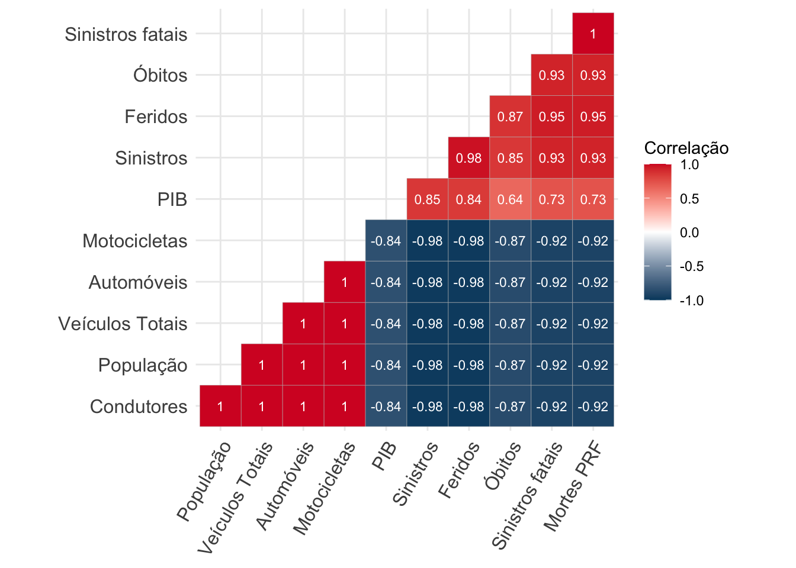

1 Introdução
O presente cenário mundial acerca de mortes e lesões relacionadas à sinistros de trânsito apresenta sérios desafios à saúde pública global, e as tendências evidenciadas pelos dados atuais indicam que esta realidade deve perdurar pelo futuro próximo (WORLD HEALTH ORGANIZATION, 2023). Sendo uma das causas de mortes mais comuns no mundo, as ocorrências de sinistros de trânsito afetam principalmente pedestres, ciclistas e motociclistas, além de induzir severos danos materiais, tanto em questão de propriedade particular quanto pública. Isto estimula países a buscarem métodos estimativos sobre os efeitos sociais, econômicos e epidemiológicos da taxa de mortes no trânsito e como se traduzem em custos e perdas na produtividade da sociedade em geral (RODRÍGUEZ; JATTIN; SORACIPA, 2020).
A segurança viária pode ser um indicador da situação de desenvolvimento de uma região, visto que é uma característica do desempenho da mobilidade urbana. Entende-se que as mortes no trânsito dependem de diversos fatores estruturais, socioeconômicos e ambientais do contexto urbano (ZHONG-XIANG et al., 2014), o que implica que elevadas taxas de sinistros viários colaboram no diagnóstico de problemas da mobilidade e saúde pública em geral, despertando o debate político sobre a regulamentação das normas viárias e apontando a carência da sociedade em combater estes eventos.
Apesar da crescente adesão por itens de segurança veicular, os sinistros de trânsito permanecem como um problema de saúde pública, já que fazem parte de um agravo que repercute por toda a sociedade (ANDRADE; ANTUNES, 2019), sendo a décima segunda maior causa de óbitos em todas as faixas etárias e a principal entre indivíduos de 5 a 29 anos (WORLD HEALTH ORGANIZATION, 2023). Como previsto por modelos estatísticos prévios à 2020 (BLUMENBERG et al., 2018), o Brasil apresentou baixo desempenho em cumprir a meta estabelecida pela Primeira Década de Ações pela Segurança no Trânsito. Neste cenário, o Plano Nacional de Redução de Mortes e Lesões no Trânsito (PNATRANS) foi desenvolvido para guiar as ações pela mobilidade segura nacional durante o período da Segunda Década de Ação pela Segurança no Trânsito (MINISTÉRIO DA INFRAESTRUTURA, 2018), na intenção de aprimorar o desempenho da segurança viária em relação a década passada, se alinhando aos Objetivos de Desenvolvimento Sustentável estabelecidos pela Agenda 2030 da Organização das Nações Unidas (ONU). Para atingir tais metas, o Art. 3º da Resolução Contran Nº 1004, de 21 de dezembro de 2023, relata que o PNATRANS se apoia em seis principais pilares (CONSELHO NACIONAL DE TRÂNSITO, 2023):
Gestão da Segurança no Trânsito;
Vias Seguras;
Segurança Veicular;
Educação para o Trânsito;
Vigilância, Promoção da Saúde e Atendimento às Vítimas no Trânsito e;
Normalização e Fiscalização.
Em relação à Resolução Contran N° 870, de 13 de setembro de 2021 (CONSELHO NACIONAL DE TRÂNSITO, 2018), a N° 1004 ratifica o quinto pilar, expandindo a visão de atendimento às vítimas no trânsito. A resolução mais recente ainda adiciona ao PNATRANS os princípios e diretrizes que constituem um sistema seguro de mobilidade, aprofundando os conceitos de iniciativas, ações e produtos promovidos pelos órgãos do Sistema Nacional de Trânsito para cada pilar.
A busca pela fundamentação técnica para a proposição de políticas públicas a respeito da mobilidade segura fomenta o estudo de diversas categorias de modelos preditivos para a sinistralidade no trânsito, tanto para estimar o número de ocorrências quanto para avaliar a influência das variáveis consideradas sobre a ocorrência de sinistros fatais. Em geral, a literatura pertinente apresenta alguns meios distintos para alcançar estes modelos de melhor ajuste: Modelos lineares multivariados foram ajustados para extrair tendências sobre os critérios aferidos (BLUMENBERG et al., 2018; CAI; ZHU; YAN, 2015), assim como modelos preditivos baseados em cadeia de Markov (JIN; ZHENG; GENG, 2020; SENETA, 1996).
O presente documento está organizado com a seguinte estrutura: a Seção 2 inclui os objetivos principais e complementares do trabalho; a Seção 3 apresenta a metodologia aplicada no trabalho, juntamente com a coleta de dados e explicação sobre o modelo aplicado; a Seção 4 traz os resultados do modelos preditivo aplicado, a Seção 5 apresenta a estimativa de custo dos óbitos e por fim, a Seção 6 conclui o trabalho.
2 Objetivos
Considerando o presente cenário, este estudo tem como objetivo elaborar um modelo de aprendizado de máquina para a previsão de mortes no trânsito em âmbito nacional no Brasil, investigando dados socioeconômicos e estruturais com o propósito de explorar diversos tipos de tratamentos e análises estatísticas para criar perspectivas futuras a cerca do cenário brasileiro da segurança viária.
Outro objetivo do trabalho é realizar o cálculo do custo financeiro dos óbitos no trânsito brasileiro, utilizando como base o valor previsto pelo modelo para 2024 e com base nas estimativas do Instituto de Pesquisa Econômica Aplicada (IPEA).
O código-fonte do trabalho está disponibilizado para acesso em um repositório no perfil do GitHub do Observatório Nacional de Segurança Viária.
3 Metodologia
3.1 Coleta de dados
A coleta de dados foi efetuada considerando as principais variáveis teoricamente relacionadas à mortalidade no trânsito disponíveis ao público, amparando a escolha de cada grandeza na literatura previamente revisada. Estes dados são reunidos e pré-processados para a formação de conjuntos específicos para o modelo linear.
Dito isto, investigam-se diversas bases de dados a fim de compilar e extrair estas informações para uma análise preliminar, anterior à modelagem. Entre as fontes contempladas estão:
PIB mensal, fornecido pelo Sistema Gerenciador de Séries Temporais do Banco Central (BANCO CENTRAL DO BRASIL, 2023), mensurado em dólares;
População nacional residente, fornecida pelo sistema DataSUS do Ministério da Saúde (MINISTÉRIO DA SAÚDE, 2023a), obtida pelo sistema TABNET;
Sinistros em rodovias federais, fornecidos pelo portal de dados abertos da Polícia Rodoviária Federal (POLÍCIA RODOVIÁRIA FEDERAL, 2023) ;
Condutores habilitados, fornecidos pelo portal de estatísticas da Secretaria Nacional de Trânsito (Senatran), provenientes do Registro Nacional de Condutores Habiltados (RENACH) (MINISTÉRIO DOS TRANSPORTES, 2023a);
Frota veicular, fornecida pelo portal de estatísticas da Senatran, provida pelo Registro Nacional de Veículos Automotores (RENAVAM) (MINISTÉRIO DOS TRANSPORTES, 2023b);
Óbitos em sinistros de trânsito, fornecidos pelo Sistema de Informação de Mortalidade (SIM) do DataSUS (MINISTÉRIO DA SAÚDE, 2023b), obtidos com auxílio da biblioteca
microdatasus(SALDANHA, 2023) da linguagem de programação R.
3.2 Modelos
3.2.1 Escala de tempo
O modelo confeccionado contempla uma janela de tempo de 2011 até a atualidade (2024). Ao criar modelos de série temporal, deve-se notar que a abundância de dados a serem modelados tem uma relação direta com a capacidade do modelo de aprender e conseguir expressá-los em instantes futuros.
3.2.2 Análise de Série Temporal
É importante ressaltar que há mais de uma maneira de se entender as relações entre os dados e, portanto, mais de uma maneira de interpretá-los em questão do processo de modelagem do problema em mãos. Neste sentido, a metodologia proposta a partir da observação dos dados disponíveis é a análise de série temporal.
A análise de série temporal se apoia no conceito de séries temporais: um conjunto de dados de alguma grandeza ordenada em sequência cronológica. Logo, seu propósito é criar um modelo generalista que prevê as observações futuras baseado nas ocorrências passadas. Este tipo de modelagem assume que o que ocorre no momento atual, neste caso os óbitos no trânsito, possui relação com o que ocorreu anteriormente. O modelo também leva em consideração o comportamento ao longo do tempo, como sazonalidade, tendência e heteroscedasticidade, e é altamente dependente da autocorrelação.
À vista disso, o processo de modelagem pretende empregar esta metodologia de análise de dados. Conforme o embasamento teórico acerca da segurança viária, esta modelagem é viável em razão do fenômeno das mortes no trânsito possuir correlação expressiva com comportamentos temporal bem ordenado.
3.2.3 Configurações
Modelos estatísticos e de aprendizado de máquina constituem um grandioso conjunto de ferramentas e métodos matemáticos e computacionais para expressar fenômenos naturais por meio de funções e algoritmos. Visando expressar as dinâmicas dos óbitos ocasionados pelo transporte, o método escolhido por sua simplicidade e versatilidade é a regressão linear, norteada pelo conceito de correlações lineares entre diferentes grandezas numéricas.
Como discutido em JAMES et al. (2021), a regressão linear simples se enquadra como um método estatístico e de aprendizado de máquina que se baseia na relação de uma variável dependente quantitativa \(Y\) em função de uma variável independente quantitativa \(X\), com \(\epsilon\) representando uma variável aleatória sobre o erro associado à estimativa, demonstrando a relação matemática linear entre as grandezas:
\[ Y = \beta_0 + \beta_1X + \epsilon \]
Desta forma, pode-se prever uma imagem \(Y\) ao se injetar um valor em \(X\) na equação, dado que estas variáveis tenham uma correlação linear significativa e que os ditos coeficientes ou parâmetros \(\beta_0\) e \(\beta_1\) sejam estimados para este modelo. No contexto deste projeto, o objetivo é estimar um modelo capaz de predizer o número de vítimas em relação a mais de uma variável independente, tratando-se então de uma regressão linear múltipla:
\[ Y_i = \beta_0 + \beta_1X_1 + \beta_2X_2 + ... + \beta_nX_n + \epsilon \]
Neste estudo, esta técnica de regressão é utilizada em razão de sua facilidade de explicação e pelas altas correlações lineares entre as variáveis. Estas correlações estatísticas são expressas em índices numéricos pelas técnicas de correlação linear (de Pearson) e correlação de Spearman, como visto na Figura 7. Sendo assim, será apresentado o modelo linear anual confeccionado com este método.
4 Resultados
4.1 Análise Exploratória de Dados
Os conjuntos de dados extraídos e pré-processados em função das unidades de tempo denunciam os comportamentos de cada atributo em relação a passagem dos anos, trimestres e meses. Em destaque, os óbitos servem como um dos principais indicadores da qualidade e disseminação dos sistemas de segurança viária do país, mostrando a evolução das mortes ao longo do tempo:
Dados reais de óbitos
O gráfico de óbitos no trânsito levantam uma tendência crescente nas vítimas fatais nos últimos quatro anos. O ano de 2019 atingiu a menor quantidade de óbitos relacionadas ao trânsito nos últimos 10 anos, quando em 2020 a têndencia tornou a crescer. No ano de 2023 houveram 34.811 vítimas fatais, 2.936 a mais que em 2019. Em 2023, essa tendência se elevou, com cresicmento de 2,91% de óbitos em relação ao ano anterior.
Assim sendo, os demais atributos do conjunto de dados podem ser visualizados em função do tempo, como foi feito para o caso da variável preditada, com o intuito de destacar cada variável preditiva ao longo dos períodos disponíveis:
Observa-se uma diferença entre os comportamentos de cada atributo ao longo do tempo. Variáveis convencionalmente cumulativas como a frota, a população e o número de condutores habilitados dispõem de um crescimento aproximadamente linear por todo o período de estudo. Todavia, detecta-se que a contagem da população se comportou de forma inesperada em alguns anos. Isso pode representar a diferença entre a população censitária e a população estimada pelo IBGE.
Os dados de rodovias federais flutuam de forma análoga aos óbitos no trânsito, agindo como referência do desempenho da segurança viária em nível nacional de determinado período, com uma sazonalidade pronunciada. Estes dados também mostram claramente como os óbitos são eventos incomuns em comparação à quantidade de sinistros totais observados. Porém, enquanto a quantidade de sinistros pode variar intensamente ao longo dos anos, o número de óbitos permanece relativamente constante, com aumentos de 2020 em diante.
O PIB é o atributo com o comportamento mais particular ao longo do tempo em relação às outras variáveis. Foi utilizado o dólar americano em lugar do real brasileiro a fim de observar a oscilação da moeda em um contexto global e revelar a contribuição histórica da economia nacional. Modelos realizados por BLUMENBERG et al. (2018) e ZHONG-XIANG et al. (2014) utilizam do PIB como um indicador do desempenho socioeconômico do país.
4.2 Correlação
O sucesso da modelagem é inteiramente dependente da intensidade e do tipo de relação estatística que as variáveis possuem entre si. Como anteriormente citado, a regressão linear múltipla bem ajustada infere que as preditivas possuem uma correlação linear forte com a preditora, mas um modelo com baixo desempenho não é necessariamente uma evidência de baixa correlação.
Grandezas que variam juntas em uma correlação linear são ditas colineares, e o fenômeno da colinearidade entre variáveis preditivas pode vir a ocasionar sobreajuste ao modelo. Por isso, é necessário avaliar as correlações não lineares, como apontam os correlogramas, a partir do método de correlação Spearman:

o correlograma apresenta valores significativos para praticamente todas as variáveis, sendo que as matrizes de 𝑝-valores calculadas rejeitam a hipótese nula com facilidade para todos os atributos.
4.3 Taxas de óbitos
O diagnóstico da segurança no trânsito de uma região em um determinado intervalo de tempo é um dos principais tópicos no campo da mobilidade segura, visto que as variáveis que influenciam a saúde no trânsito não são um consenso acadêmico absoluto. Este fato fomenta a pesquisa e desenvolvimento de novas metodologias e indicadores específicos para a análise estatística do cenário brasileiro que melhor interpretem os dados disponíveis e representem o fenômeno real da sinistralidade de maneira verossímil. FERRAZ et al. (2023) disserta sobre a questão da quantificação e qualificação da sinistralidade por meio da determinação de índices utilizando das mortes, população e frota como parâmetros para estabelecer valores representativos do nível de segurança do local.
Estes índices são usualmente referidos em função de altas casas decimais para salientar a significância dos valores de cada taxa calculada. As taxas que direcionaram o presente estudo na avaliação da sinistralidade anual foram as vítimas fatais por 100 mil habitantes e vítimas fatais por 10 mil veículos, como indicado:
As duas taxas anunciam tendências distintas acerca da fatalidade no trânsito brasileiro. Enquanto o índice de mortes por veículos oferece uma perspectiva de estabilização no número de vítimas, a taxa de habitantes corrobora a visão de que as mortes estão inclinadas ao aumento na década atual. Deve-se levar em consideração que esta diferença de comportamento pode resultar da evolução da frota veicular e da população nacional em intensidades distintas.
4.4 Resultado do modelo
A avaliação de desempenho do modelo foi feita a partir da necessidade e especificações deste. Visualizações podem ser criadas a fim de apresentar a proximidade das previsões em relação aos valores reais, com métricas de erros sendo utilizadas para quantificar a taxa de acertos do modelo. Para o caso atual em que as informações são anuais, o volume de dados é menor e a validação foi dada com o mesmo conjunto utilizado no treinamento.
4.4.1 Regressão Linear Múltipla
A análise de regressão linear múltipla foi a abordagem utilizada durante a produção do estudo. Cada métrica é extraída e apresentada para avaliação da performance, com os resultados.
Para o caso desta análise, as previsões emitidas são comparadas com as ocorrências reais, enquanto as métricas são baseadas no mesmo conjunto de ajuste do modelo:
| Métrica | Valor |
|---|---|
| RMSE | 683,01 |
| MAE | 620,03 |
| R² | 0,98 |
Como é demonstrado pelo amplo intervalo de confiança preditado (área em cinza no gráfico), o fato do conjunto de dados anuais ser relativamente pequeno confere uma incerteza atribuída à essa abordagem. Para 2024, o modelo prevê 38.256 óbitos no trânsito brasileiro, uma diferença de 3.375 vítimas e um aumento de aproximadamente 9,7% em relação ao valor real do ano anterior (2023).
As métricas RMSE e MAE são melhor aplicadas de forma comparativa entre diferentes ajustes, sendo utilizados para auxiliar na seleção de atributos para o treinamento do modelo. Foi concluído que as melhores variáveis para explicar as ocorrências de óbitos no trânsito para esta categoria de modelo foram a frota total, os sinistros totais e fatais em rodovias federais e os condutores habilitados.
Como este modelo em específico possui maior variedade de atributos, a combinação de diversas configurações das variáveis preditivas foi feita manualmente para filtrar as de maior utilidade. Componentes como a população, o PIB e as mortes em rodovias federais foram considerados muito colineares, prejudicando a performance do modelo. Na Tabela 2, estão explicitados os melhores atributos e seus coeficientes:
| Variável | Coeficientes | P-valor |
|---|---|---|
| Intercepto Y | 37337.62 | 0.00 |
| Frota | 6614.61 | 0.30 |
| Sinistros fatais | 8470.69 | 0.02 |
| Sinistros | -3754.51 | 0.27 |
| Condutores | -6493.49 | 0.32 |
Uma das características notáveis deste modelo é sua capacidade de descrever observações anômalas ao decorrer dos anos, onde os óbitos ultrapassam os intervalos de confiança estipulados pelo modelo, mesmo que este apresente uma alta performance e capacidade preditiva segundo as métricas.
4.5 Comparação de Modelos
Após os experimentos, a seleção de um modelo final é feita de forma comparativa, considerando não apenas os índices de métricas de erros calculados mas também as características e capacidades de cada modelo individualmente.
O RMSE e o MAE melhoram em escalas menores de tempo, sendo consequência indireta da maior disponibilidade de dados para o treinamento do modelo. Mesmo assim, será perceptível que, por exemplo, um modelo mensal bem ajustado não prevê um ano inteiro melhor que um modelo anual, por efeito da acumulação de erros associados às previsões de cada mês. Como implica a ?@tbl-compare, o modelo linear anual aparenta ter resultados mais plausíveis que o mensal, mesmo tendo um desempenho de RMSE e MAE inferior. Em relação ao 𝑅2, o modelo anual apresenta o melhor desempenho.
| Modelo | Previsão | Máx. | Mín. |
|---|---|---|---|
| Linear Anual | 38.256 | 41.292 | 35.220 |
Nota-se que o modelo regressivo estipulam que as fatalidades crescem. Na Figura 11, os resultados do modelo foram agrupados e somados por ano para visualização de cada série temporal:
Em questão das taxas anteriormente discutidas para quantificação dos óbitos em relação à população e à frota veicular, novos valores podem ser calculados sobre as previsões a fim de averiguar a mudança destas taxas em função do tempo:
5 Custos dos óbitos
A presente seção inclui o processo e resultado da estimativa de custos para a quantidade de óbitos prevista para 2024, conforme o modelo linear anual previamente ajustado (38.256 óbitos). Fez-se a estimativa dos custos financeiros com base na estimativa dos custos de sinistros do Brasil elaborada pelo Instituto de Pesquisa Econômica Aplicada (IPEA).
Em 2020, o IPEA divulgou o relatório “CUSTOS DOS ACIDENTES DE TRÂNSITO NO BRASIL: ESTIMATIVA SIMPLIFICADA COM BASE NA ATUALIZAÇÃO DAS PESQUISAS DO IPEA SOBRE CUSTOS DE ACIDENTES NOS AGLOMERADOS URBANOS E RODOVIAS” (CARVALHO, 2020), cujo principal objetivo foi apresentar o resultado das atualizações das pesquisas de custos dos acidentes de trânsito no Brasil.
No trabalho realizado pelo IPEA, a estimativa dos custos dos sinistros é realizada de forma distinta para rodovias federais, rodovias estaduais ou municipais, e aglomerados urbanos. A estimativa para os sinistros ocorridos em rodovias federais é baseada em três componentes: (i) componentes de custos associados às pessoas; (ii) componentes de custos associados aos veículos; e (iii) componentes de custos institucionais e danos patrimoniais (CARVALHO, 2020).
Para o fim de estimar o custo dos óbitos no trânsito brasileiro em 2024, será utilizado o custo associado às pessoas, na categoria “Mortos”. Mesmo que essa seja uma estimativa para rodovias federais, ela será utilizada no calculo dos custos dos óbitos de uma forma geral para a quantidade de óbitos no Brasil em 2024, pois as outras categorias (rodovias estaduais / municipais e aglomerados urbanos) não possuem essa estimativa de componente associado às pessoas. Assim, será possível alcançar uma estimativa aproximada deste custo total.
Os componentes de custos associados às pessoas que foram à óbito por consequência de sinistros de trânsito englobam os custos pré-hospitalares, custos hospitalares, custos de perda de perda de produção e custos de remoção. O IPEA estimou um custo total associado à cada vítima fatal de sinistros de R$ 433.286,69, considerando um valor em reais de dezembro de 2014 (CARVALHO, 2020). Com o objetivo de atualizar esse valor para dezembro de 2024, utilizou-se o Índice Nacional de Preços ao Consumidor Amplo (IPCA). De acordo com a Calculadora do Cidadão, disponibilizada pelo BANCO CENTRAL DO BRASIL (2024), o IPCA acumulado entre dez/2014 e dez/2023 é de 76,26%. Assim, para alcançar o custo por vítima fatal em 2024, multiplica-se a taxa de 1,7626 pelo custo de 2014, alcançando um custo por óbito de R$ 763.711,12.
Por fim, multiplicando o custo individual das mortes em 2024 pela quantidade estimada de óbitos de 38.256, tem-se que o custo total dos óbitos previstos no trânsito em 2024 é de R$ 29.216.532.598,84, ou aproximadamente R$ 30 bilhões.
6 Conclusão
Os modelos regressivos desenvolvidos antecipam uma tendência ao aumento relativo nas vítimas de sinistros de trânsito em 2024, uma revelação preocupante à presente situação da segurança viária no Brasil. Por isso, a análise de regressão permanece como a abordagem mais interessante no contexto do fenômeno estudado, tanto pela qualidade da previsão quanto pela capacidade explicativa deste tipo de metodologia.
Com base no modelo de regressão linear anual, que apresentou o melhor R-quadrado (\(R^2 = 0,98\)), a quantidade prevista de óbitos no trânsito brasileiro é de 38.256, representando um aumento de 2.936 vítimas fatais em comparação com a quantidade de 2023, que foi de 34.881. Traduzindo esses valores em taxas de óbitos por 100 mil habitantes, o valor previsto para 2024 é de 17,18 óbitos por 100 mil habitantes, um aumento em comparação com a taxa observada em 2023, que foi 16,69 óbitos por 100 mil habitantes.
Com a estimativa dos custos dos óbitos realizada, foi possível chegar a um valor aproximado de R$ 30 bilhões com base nos 38.256 previstos, ou seja, aproximadamente R$ 784 mil por óbito.
É fundamental também destacar que as soluções de segurança viária não dependem apenas de atributos da mobilidade urbana. Inúmeros fatores socioeconômicos e de infraestrutura podem afetar o desempenho da segurança. O cenário atual da segurança viária brasileira apresenta alguns desafios e deficiências que podem impactar na conquista das metas de redução estabelecidas em âmbito nacional pelo PNATRANS. Os dados previstos mostram um desempenho abaixo do ideal no combate da fatalidade no trânsito brasileiro, conferindo uma perspectiva pessimista para a década atual no Brasil e, caso este cenário não seja amenizado com antecedência, é improvável a ocorrência de avanços significativos nos objetivos da Segunda Década de Ação pela Segurança no Trânsito.
Referências
ANDRADE, F. R. D.; ANTUNES, J. L. F. Tendência do número de vítimas em acidentes de trânsito nas rodovias federais brasileiras antes e depois da Década de Ação pela Segurança no Trânsito. Cadernos de Saúde Pública, v. 35, n. 8, p. e00250218, 2019.
BANCO CENTRAL DO BRASIL. SGS - Sistema Gerenciador de Séries Temporais - v2.1. 8 dez. 2023.
BANCO CENTRAL DO BRASIL. Calculadora Do Cidadão. Disponível em: <https://www3.bcb.gov.br/CALCIDADAO/publico/exibirFormCorrecaoValores.do?method=exibirFormCorrecaoValores>. Acesso em: 11 abr. 2024.
BLUMENBERG, C. et al. Is Brazil going to achieve the road traffic deaths target? An analysis about the sustainable development goals. Injury Prevention, v. 24, n. 4, p. 250–255, ago. 2018.
CAI, H.; ZHU, D.; YAN, L. 2015 International Conference on Transportation Information and Safety (ICTIS). Wuhan, China: IEEE, jun. 2015. Disponível em: <http://ieeexplore.ieee.org/document/7232140/>
CARVALHO, C. H. R. Custos Do Acidentes de Trânsito No Brasil: Estimativa Simplificada Com Base Na Atualização Das Pesquisas Do IPEA Sobre Custos de Acidentes Nos Aglomerados Urbanos e Rodovias. [s.l.] Instituto de Pesquisa Econômica Aplicada, 2020. Disponível em: <https://www.ipea.gov.br/portal/images/stories/PDFs/TDs/td_2565.pdf>.
CONSELHO NACIONAL DE TRÂNSITO. RESOLUÇÃO CONTRAN Nº 870. 11 jan. 2018.
CONSELHO NACIONAL DE TRÂNSITO. RESOLUÇÂO CONTRAN N° 1004. 21 dez. 2023.
FERRAZ, A. C. P. et al. Segurança no trânsito. 3. ed. Curitiba, PR: [s.n.].
JAMES, G. et al. An introduction to statistical learning: with applications in R. Second edition ed. New York, NY: Springer, 2021.
JIN, X.; ZHENG, J.; GENG, X. Prediction of Road Traffic Accidents Based on Grey System Theory and Grey Markov Model. International Journal of Safety and Security Engineering, v. 10, n. 2, p. 263–268, 30 abr. 2020.
MINISTÉRIO DA INFRAESTRUTURA. Plano Nacional de Redução de Mortes e Lesões no Trânsito. 11 jan. 2018.
MINISTÉRIO DA SAÚDE. Mortalidade desde 1996 pela CID-10. 25 set. b2023.
MINISTÉRIO DA SAÚDE. População residente. 25 set. a2023.
MINISTÉRIO DOS TRANSPORTES. Frota de Veículos - 2022. 25 set. b2023.
MINISTÉRIO DOS TRANSPORTES. Registro Nacional de Condutores Habilitados. 25 set. a2023.
POLÍCIA RODOVIÁRIA FEDERAL. Dados Abertos da PRF. 23 set. 2023.
RODRÍGUEZ, J.; JATTIN, J.; SORACIPA, Y. Probabilistic temporal prediction of the deaths caused by traffic in Colombia. Mortality caused by traffic prediction. Accident Analysis & Prevention, v. 135, p. 105332, fev. 2020.
SALDANHA, R. Microdatasus: pacote para download e pré-processamento de microdados do Departamento de Informática do SUS (DATASUS). [s.l: s.n.].
SENETA, E. Markov and the Birth of Chain Dependence Theory. International Statistical Review / Revue Internationale de Statistique, v. 64, n. 3, p. 255, dez. 1996.
WORLD HEALTH ORGANIZATION. Global status report on road safety 2023. [s.l: s.n.].
ZHONG-XIANG, F. et al. Combined Prediction Model of Death Toll for Road Traffic Accidents Based on Independent and Dependent Variables. Computational Intelligence and Neuroscience, v. 2014, p. 1–7, 2014.